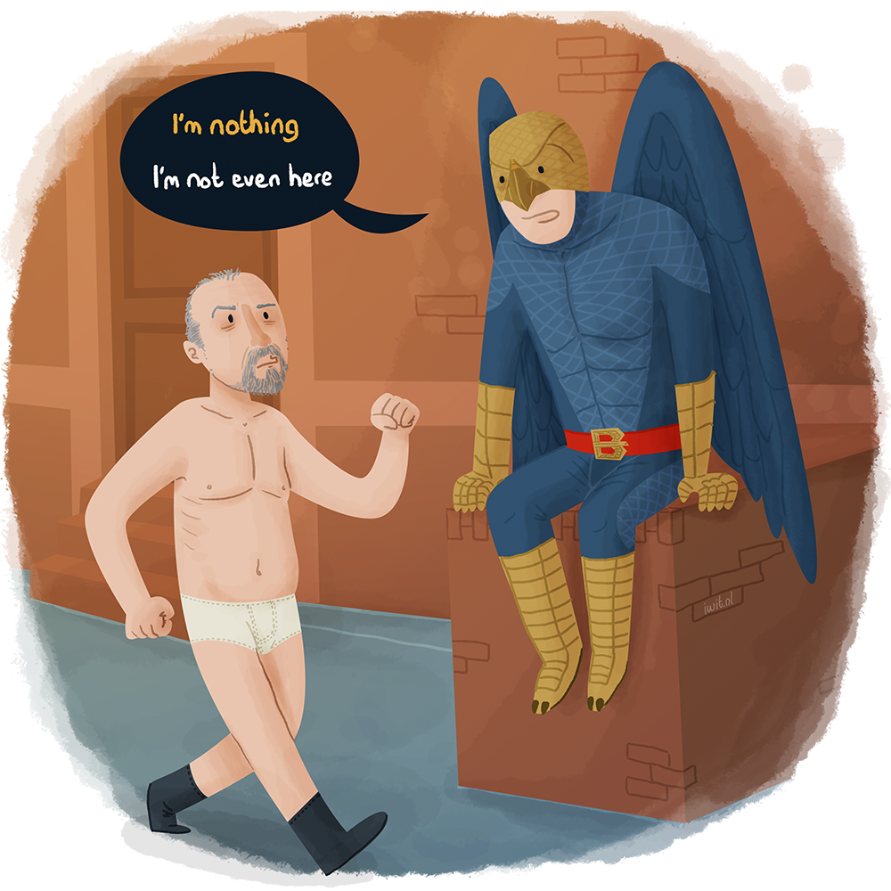
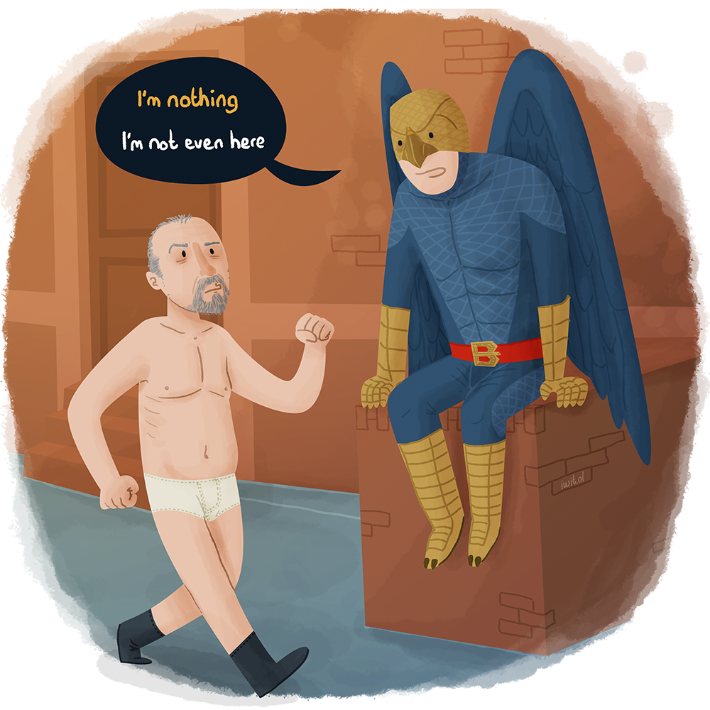
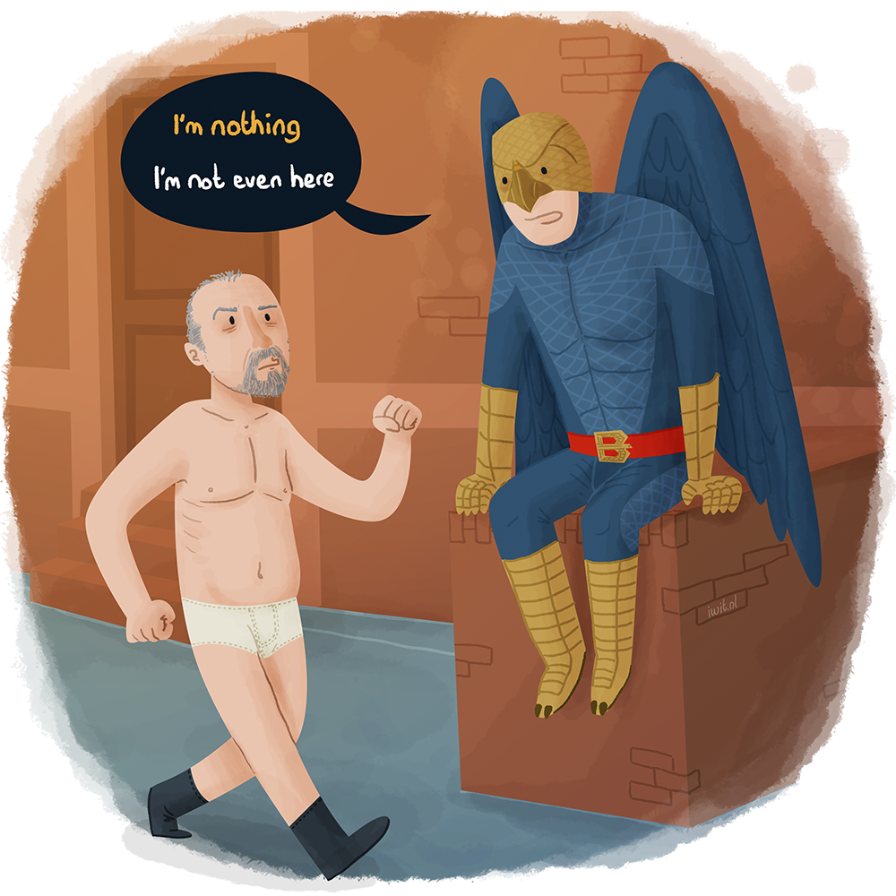

Designing icons isn’t hard to do.But it is, apparently, hard to do right. There are a lot of things to keep in mind when creating a large set of icons.
But before we get into the details of what and how, we should first talk about what icons are. Icons are small abstract shapes that represent an idea. In UI design they can be used to make the interface easier to read. An icon is something to interact with. An intuitive visual that’s understandable through all cultures and languages. If used correctly, with a consistent icon set you can give a feeling of quality in your interface, to signal to your user that you’re a professional who knows what they’re doing.
Icons are a part of the UI. They should blend in, be actionable and easily understood at small sizes. Often clients will request an ‘icon’ that’s used more to just have a fun visual next to, say, a USP*. These usually shouldn’t be icons, they’re ‘spot illustrations’ and can be richer in visual style than regular icons.
Of course you could just download an icon pack from the internet and be done with it. Those packs are often missing some icons you might need for your specific use and you’ll end up downloading more icon packs to fill up the missing icons. Those icons have a different style from the first pack though. And before you know it you have a horrible mishmash of differently styled icons in your interface. Those packs are also not very unique and don’t always fit with the brand identity of your client. An icon set designed with airport wayfinding in mind would feel completely out of place at a Chinese supermarket for example.
Icon design is very much a precise job. Unlike web/interface design, there’s no front-end developer who’ll fix your smaller mistakes and inconsistencies later on. You have to make sure everything is perfect. From the stroke weights and corner radiuses to a consistent perspective and overall weight of the icons themselves.
Before you start designing any icon you should always ask yourself if it should even be an icon. What is it going to be used for? In what context, Who’s the target audience?
If the icon is going to be used to just add an image to some text, it should probably not be an icon. A spot illustration would be more appropriate. When designing a set of icons that start to look more and more the same, for example different types of media (CD, DVD, Blu-ray), you should probably not try to create different icons for everything. It’s okay to use the same icon for different cases.
Icon design is very much a precise job. Unlike web/interface design, there’s no front-end developer who’ll fix your smaller mistakes and inconsistencies later on. You have to make sure everything is perfect. From the stroke weights and corner radiuses to a consistent perspective and overall weight of the icons themselves.
When designing icons for a client, you’ll want the icons to fit in with the brand. For this you can look at a couple different things. The typography or the logo for example. Does it have sharp corners or is it more rounded, how thick are the strokes. The brand colours. Is it just one colour, monochrome, multiple colours or does it use transparency? Or if that’s not enough, have a look at the brand promise or the core values. What’s the tone of voice? Is it loud, soft, friendly, pure business, etc? This will all have impact on the style of the icon.
To make sure all your icons have the same weight and feel like they’re from the same family of icons you should use an icon grid. These consist of a couple of rectangles and circles. You can see these as bounding boxes. The amount of pixels within each shape is somewhat the same. Stay within these shapes and your icons will feel like they all have the same weight. Google has a great icon grid for their Android/Material Design icons.
When deciding between outline or solid icons always look at the bigger picture first. Will it feel at home within the design. Are outline icons heavy enough? Are solid icons too heavy?
Also consider that not all shapes work as one or the other. Outline icons tend to get really complex really fast and loose their recognisability and meaning in an interface. The same goes for solid icons. Not all icons feel solid. A smartphone or laptop icon might look like outline icons because of their screens.
Are all icons going to have hard corners, or are they all going to have a corner radius? It’s easy to lose this consistency in larger icon sets. Hard corners don’t always work on all icons and the same goes for rounded corners. Try to have a good rational behind the usage. For instance, only use rounded corners on icons that represent physical objects that are mostly rounded or organic shapes that wouldn’t be recognisable with hard corners. Just be consistent. Don’t use different radiuses for every icon.
Start on paper, think about the icon, should it even be an icon. What size is the icon going to be used at. Put it on a grid. Be consistent in your strokes, corners, the use of outlines, solids and 2D or 3D. And please don’t ever use free social media icon packs.
Keeping all this in mind, designing a consistent icon set shouldn’t be all that hard.
* The unique selling proposition (USP) or unique selling point is a marketing concept first proposed as a theory to explain a pattern in successful advertising campaigns of the early 1940s. The USP states that such campaigns made unique propositions to customers that convinced them to switch brands.
